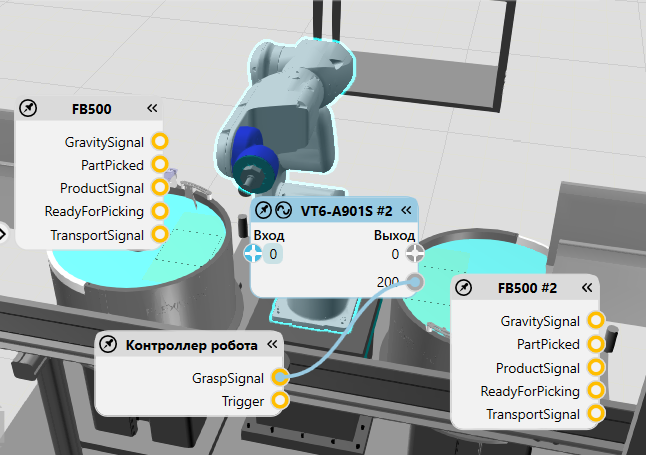
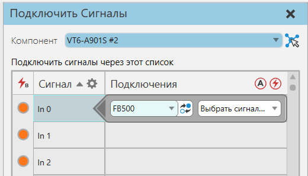

Подключение сигналов к входам/выходам робота |
|
Редактор сигналов робота можно использовать для подключения сигналов других компонентов в качестве входов и выходов. При подключении входов и выходов редактор сигналов робота позволяет изменить порт ввода/вывода для подключенного сигнала. То есть вам не нужно отключать сигнал, чтобы изменить порт ввода/вывода, к которому подключен сигнал в роботе. 1.На вкладке Программирование, в группе Соединить, нажмите Сигналы. Это включает видимость редакторов сигналов на основе выбора в трехмерном мире. 2.В трехмерном мире выберите робота, чтобы отобразить его редактор сигналов и редакторы других компонентов с совместимыми сигналами.  3.Разверните редактор сигналов другого компонента, а затем перетащите порт сигнала, чтобы отобразить провод для подключения этого сигнала к роботу. 4.Продолжайте перетаскивать провод, а затем сделайте одно из следующих действий: ·Чтобы считать значение этого сигнала в качестве входного, перетащите провод к порту Вход [+] редактора сигналов робота. ·Чтобы считать значение этого сигнала в качестве выходного сигнала, перетащите провод к порту Выход [+] редактора сигналов робота. 5.В редакторе сигналов робота рядом с входом или выходом, подключенным к сигналу, нажмите кнопку Редактировать. 6.В диалоговом окне установите Изменение для сигнала к сигналу в роботе, который вы хотите использовать для подключения, а затем щелкните Закрыть.  7.Если вы хотите удалить соединение, в трехмерном мире наведите указатель на провод, а затем щелкните ЛКМ. |